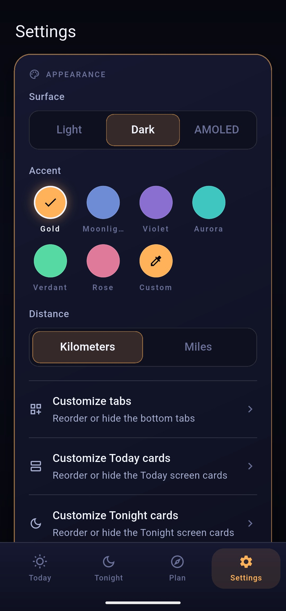

Almanox bends to how you work: three surfaces and a palette of accents, tabs and cards you can reorder or hide, a one-file backup of everything you have saved, and alerts that ping you before the light happens rather than after.
Pick the darkness that suits your eyes, and the colour that runs through the whole app.
Surface sets the base: Light for daytime planning, Dark for the evening, and AMOLED - true black - to save power and stay stealthy at the shooting site, where a bright screen ruins both your night vision and the shot.
Accent recolours everything - the rings, the highlights, the active tab - from seven presets: Gold, Moonlight, Violet, Aurora, Verdant and Rose, plus a Custom eyedropper to dial in any colour you like. Every theme and every accent is free; none of this is behind the paywall.
AMOLED plus a deep accent is the field favourite: the interface all but disappears into the dark, and only the numbers you need glow back at you.

The bottom tabs and the cards on Today and Tonight are yours to arrange.
Nothing here is destructive - hiding a card or tab just tidies your view, and you can bring it back any time from the same screen.
Your places, notes and settings, exported to a single file.
Backup & restore exports everything you have built - saved locations, journal notes and your settings - to one file you control. Move to a new phone, restore it, and your setup comes with you. Because Almanox keeps everything on-device, this file is your copy; nothing lives on a server for you to lose.
Golden hour, the dark-sky window and aurora - with a lead time you set.
Under Alerts, Almanox can notify you ahead of the moments worth stopping for: the start of golden hour, the opening of the dark-sky window, and aurora activity. Each has an adjustable lead time, so the ping lands with enough notice to actually get to the tripod - not as the window closes.
Notifications are part of Pro, so the alert toggles open the upgrade sheet for free users. Everything else on this screen - every surface, every accent, the tab and card layout, and backup - is free.
Golden-hour and custom alerts are part of one-time $12.99 Pro, along with the Milky Way core forecast, the detailed hourly forecast, the shot planner, home-screen widgets and unlimited locations - the Good-night dark-sky alert is free. No subscription; pay once.
Almanox is a one-time $12.99 purchase - no subscription, no ads, no account. Your theme, your layout, your places, all on your device.